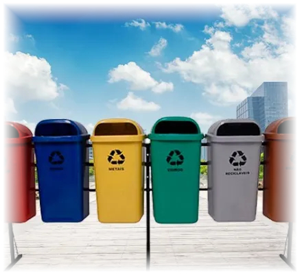
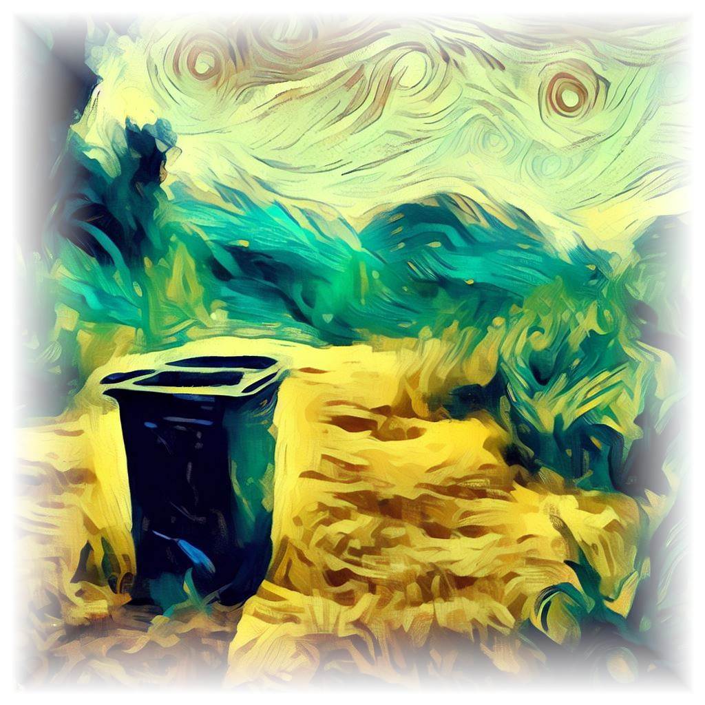
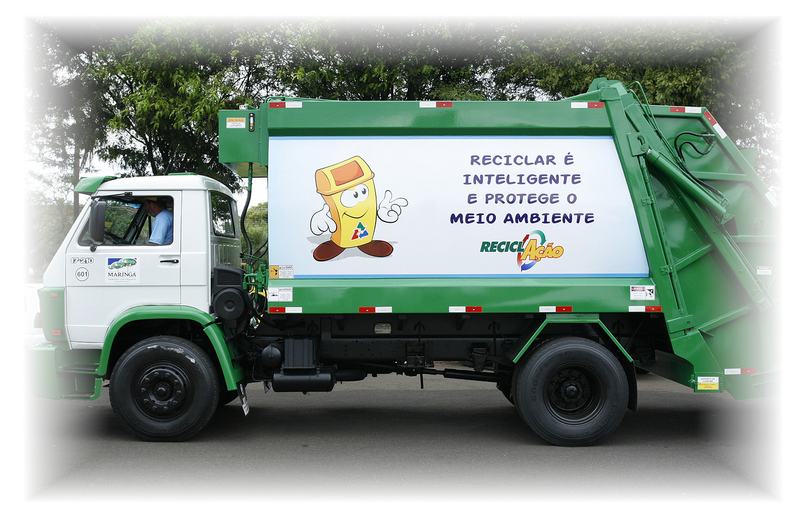
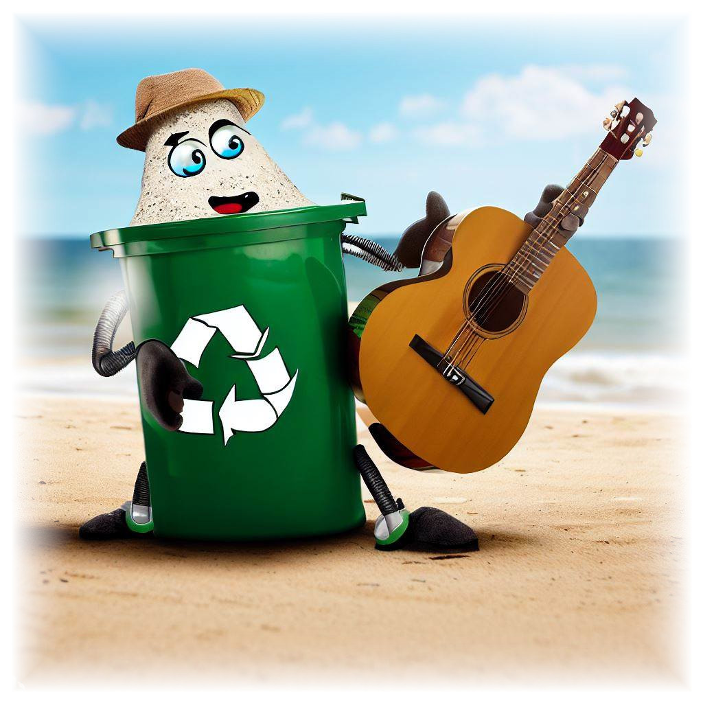

Separando o Lixo Corretamente
Introdução

Em um mundo cada vez mais consciente da importância da sustentabilidade, a separação correta do lixo se torna uma ação vital para a preservação do nosso planeta. Saber como descartar resíduos de maneira apropriada pode fazer toda a diferença na redução da poluição, economia de recursos naturais e promoção de um ambiente saudável para as gerações futuras.
Separação Simplificada em Passos Práticos

Separar o lixo de forma correta pode parecer uma tarefa complicada, mas com alguns passos simples, você estará contribuindo significativamente para a proteção do meio ambiente:
Conheça as Categorias: Familiarize-se com as categorias básicas de separação de lixo: orgânico, reciclável, rejeito e resíduos perigosos. Isso ajudará a direcionar os diferentes tipos de resíduos para os destinos adequados.
Orgânico: Restos de comida, cascas de frutas, borra de café e outros materiais biodegradáveis pertencem a essa categoria. Separe-os para compostagem, que pode ser usada para enriquecer o solo.
Reciclável: Papel, papelão, plástico, vidro e metais devem ser separados para reciclagem. Certifique-se de lavar bem os recipientes antes de colocá-los na lixeira de recicláveis.
Rejeito: Materiais que não são recicláveis nem compostáveis, como fraldas descartáveis e produtos de higiene pessoal, devem ser colocados no lixo comum.
Resíduos Perigosos: Pilhas, baterias, medicamentos vencidos e produtos químicos devem ser levados a pontos de coleta específicos, geralmente disponíveis em farmácias e locais designados
Dicas Adicionais e Benefícios

- Compacte o lixo reciclável para economizar espaço.
- Opte por produtos reutilizáveis para reduzir a geração de resíduos.
- Procure programas de coleta seletiva em sua comunidade para garantir que os materiais recicláveis sejam devidamente processados.
- O descarte correto do lixo não apenas ajuda o meio ambiente, mas também pode gerar economia de recursos e redução de custos.
Conclusão

A separação correta do lixo é uma ação simples que pode ter um impacto profundo no nosso planeta. Ao adotar práticas responsáveis de descarte, você contribui para a construção de um futuro mais sustentável e saudável para todos. Pequenas mudanças no nosso dia a dia podem resultar em grandes benefícios para o meio ambiente e para as próximas gerações.
Richard P. G. de Carvalho - Jornalista e Escritor
Este artigo foi escrito para WC NEWS. A reprodução deste conteúdo é permitida desde que seja devidamente creditada a fonte.